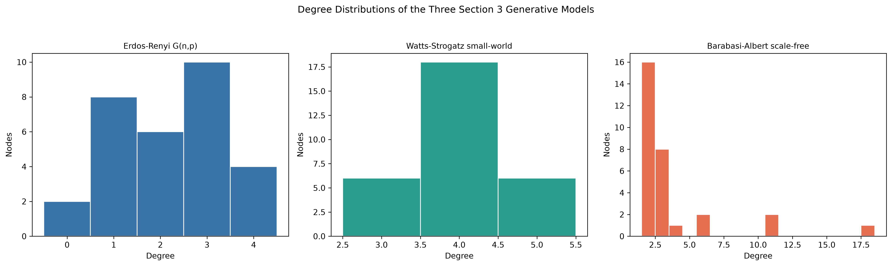

Objective and data source
The exercise reuses the required teaching definition and saves every calculated
artifact through the deterministic Python pipeline. Relevant data:
outputs/tables/generative_models_comparison.csv.
Scope: The Facebook dataset is used for the empirical
analysis. This mandatory network exercise uses the supplied or explicitly synthetic
relationship data because the Facebook table has no verified user-to-user edges.
Verified result
Watts-Strogatz captures clustering and short paths; Barabasi-Albert captures hubs and heterogeneous degree. A social network can require both properties, so no model is universally best.

Python implementation
def build_generative_models() -> dict[str, nx.Graph]:
"""Recreate the three Section 3 models with the original parameters."""
n_nodes = 30
return {
"Erdos-Renyi G(n,p)": nx.erdos_renyi_graph(n=n_nodes, p=0.08, seed=SEED),
"Watts-Strogatz small-world": nx.watts_strogatz_graph(
n=n_nodes, k=4, p=0.1, seed=SEED
),
"Barabasi-Albert scale-free": nx.barabasi_albert_graph(
n=n_nodes, m=2, seed=SEED
),
}
def compare_generative_models(
models: dict[str, nx.Graph],
) -> tuple[pd.DataFrame, dict[str, list[int]]]:
"""Calculate and save fair statistical comparisons for Section 3 models."""
rows: list[dict[str, Any]] = []
distributions: dict[str, list[int]] = {}
notes = {
"Erdos-Renyi G(n,p)": (
"Homogeneous random mixing; limited clustering and no preferential hubs."
),
"Watts-Strogatz small-world": (
"High local clustering and short paths, but comparatively narrow degrees."
),
"Barabasi-Albert scale-free": (
"Strong hubs and heterogeneous degrees, but weaker local clustering here."
),
}
for name, graph in models.items():
metrics = graph_metrics(graph)
degrees = [degree for _, degree in graph.degree()]
distributions[name] = degrees
rows.append(
{
"Model": name,
"Nodes": metrics["nodes"],
"Edges": metrics["edges"],
"Density": metrics["density"],
"Average Degree": metrics["average_degree"],
"Average Clustering": metrics["average_clustering"],
"Connected": metrics["connected"],
"Connected Components": metrics["connected_components"],
"Average Shortest Path": metrics["average_shortest_path"],
"Path Length Scope": metrics["average_shortest_path_scope"],
"Maximum Degree": metrics["maximum_degree"],
"Degree Standard Deviation": metrics["degree_standard_deviation"],
"Social-Network Similarity Notes": notes[name],
}
)
comparison = pd.DataFrame(rows)
comparison.to_csv(TABLES / "generative_models_comparison.csv", index=False)
return comparison, distributions
Browse complete Python source Read report section
Interpretation and limitation
Watts-Strogatz captures clustering and short paths; Barabasi-Albert captures hubs and heterogeneous degree. A social network can require both properties, so no model is universally best.
Limitation: One small seeded realization per model does not quantify simulation uncertainty.